Transforming 30 hectares of industrial legacy into a world-class mixed-use district for Tajikistan's capital
In the heart of Dushanbe, 30 hectares of industrial land present a once-in-a-century opportunity to reshape the capital of Tajikistan. Boghi Dushanbe envisions the transformation of this underutilized site — currently occupied by aging thermal power and industrial infrastructure — into a vibrant, mixed-use district that serves as the new center of civic, commercial, and cultural life for a nation on the rise.
Dushanbe's population of 1.07 million is growing at 2.73% annually, generating intense demand for housing, employment, and urban amenities that the current building stock cannot meet. The city is expanding its boundaries to 25,000 hectares by 2040, yet the most valuable intervention lies not at the periphery but in the center — where infrastructure already exists and where transformation carries the greatest symbolic and economic weight.
International institutions including the World Bank (Dushanbe Sustainable Urban Development Project) and the EBRD (Tajikistan Country Strategy 2025–2030, with green cities as a priority) are already investing in Dushanbe's modernization, creating a favorable environment for large-scale urban development.
Boghi Dushanbe is not merely a real estate development. It is a statement of national ambition: that Tajikistan can build world-class urbanism rooted in its own culture, climate, and values. The project proposes a phased, public-private approach to delivering approximately 12,000–15,000 residential units, 200,000–300,000 sqm of commercial space, destination retail, a landmark cultural center, a luxury hotel, and extensive public parks — all within a walkable, green, and architecturally coherent district.
The name itself — "Boghi Dushanbe," meaning "Garden of Dushanbe" — signals the intent: to create an urban oasis where landscape, water, mountain views, and contemporary Tajik architecture converge to produce a place of enduring civic pride.
A project of this significance requires a name that resonates with government officials, international investors, and Tajik citizens alike. Below are evaluated alternatives with our recommendation.
| Name | Meaning | Tone | Rationale | Rating |
|---|---|---|---|---|
| Boghi Dushanbe | Garden of Dushanbe | Civic Premium Family | Culturally profound — "bogh" (garden/paradise) is central to Persian-Tajik civilization. Evokes green urbanism, renewal, and beauty. Immediately understood by all Tajik speakers. Government-friendly and poetic. | Recommended |
| Toji Dushanbe | Crown of Dushanbe | Premium Civic | Conveys primacy and prestige. Positions the district as the pinnacle of the city. Strong governmental appeal — connotes leadership and excellence. | Top 3 |
| Darvoza-i-Nau | New Gateway | Civic International | Positions the development as an entry point to the new Dushanbe. "Darvoza" (gateway) is historically resonant in Central Asian urbanism — cities were defined by their gates. | Top 3 |
| Navoi District | New / Innovation | International Modern | Clean, modern, forward-looking. Also references the great poet Alisher Navoi. However, may feel generic without cultural specificity. | |
| Sitora City | Star City | Premium International | Aspirational and memorable. "Sitora" (star) appears in Tajik poetry and place names (Sitora-i-Mokhi Khosa palace in Bukhara). Slightly commercial in tone. | |
| Samarkand Quarter | Silk Road Heritage | International Premium | Evokes the grandeur of the Silk Road. Strong international recognition. Risk: Samarkand is in Uzbekistan, which may create political sensitivities despite shared heritage. | |
| Ravshan Park | Bright / Luminous Park | Civic Family | Warm, optimistic, family-friendly. "Ravshan" is a beloved Tajik word meaning bright or radiant. Park-centric naming aligns with the green urbanism vision. | |
| Istiqlol Heights | Independence Heights | Civic Premium | Patriotic and governmental. References national independence and elevation (both literal and metaphorical). Strong for official communications. | |
| Poytoxt District | Capital District | Civic International | Direct and authoritative. Positions the development as quintessentially the capital's district. Functional but less poetic. | |
| Varzob Terrace | Named for Varzob River | Family Civic | Geographic specificity. Connects to the Varzob River and the mountains. Landscape-forward naming. May undersell the ambition of the project. |
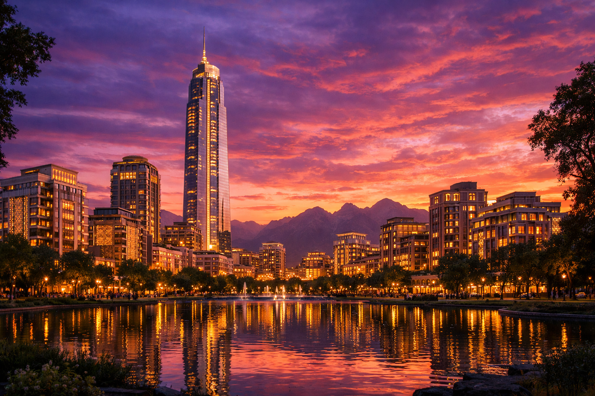
Thirty hectares of contiguous land in central Dushanbe is an extraordinary asset. In most capital cities worldwide, sites of this scale simply do not become available. The Luchob-area industrial site — located near the city's botanical gardens, with potential proximity to the Varzob River corridor, and within reach of Dushanbe's institutional and commercial core — is a site of genuine strategic significance.
Its current use as aging industrial and thermal power infrastructure represents a legacy of Soviet-era planning that, while historically important, no longer reflects the needs or aspirations of modern Dushanbe. As power generation shifts to newer facilities and the city center demands higher and better uses, the rationale for transformation becomes compelling.
Dushanbe is not standing still. The planned RMJM Dushanbe Tower — envisioned as a supertall landmark — signals the city's readiness to join the ranks of modern global capitals. The World Bank's Dushanbe Sustainable Urban Development Project and the EBRD's 2025–2030 country strategy (which explicitly includes green city development) demonstrate international confidence in Tajikistan's urban future.
The city's expansion plan to 25,000 hectares by 2040 acknowledges the demographic reality: a population growing at 2.73% annually, a real estate market appreciating at 4.69% per year, and a chronic housing shortage that affects families at every income level.
The transformation of an industrial site into a world-class mixed-use district is more than an urban planning exercise. It is a statement about national identity and direction. It says that Tajikistan values its people's quality of life, that it embraces modern standards of sustainability and design, and that it can attract international expertise and investment while remaining rooted in its own cultural traditions.
Boghi Dushanbe would join a lineage of transformative urban projects — from London's King's Cross to Seoul's Cheonggyecheon, from Singapore's Marina Bay to Astana's new city center — where the deliberate reimagining of underused urban land catalyzed broader national progress.
Behind every statistic is a Dushanbe family seeking a dignified home, a young professional searching for career opportunities close to home, a child who deserves safe parks and good schools. The housing crisis is not abstract — it is felt daily by hundreds of thousands of residents. Boghi Dushanbe addresses this directly: 12,000–15,000 new homes, modern schools, clinics, and parks, all within a 15-minute walkable neighborhood framework.
This is not development for its own sake. It is development in service of the people of Dushanbe and the Republic of Tajikistan.
We present two development schemes — one pragmatic, one aspirational — to illustrate the range of possibilities. Either can be refined, or elements combined, based on government priorities and market conditions.
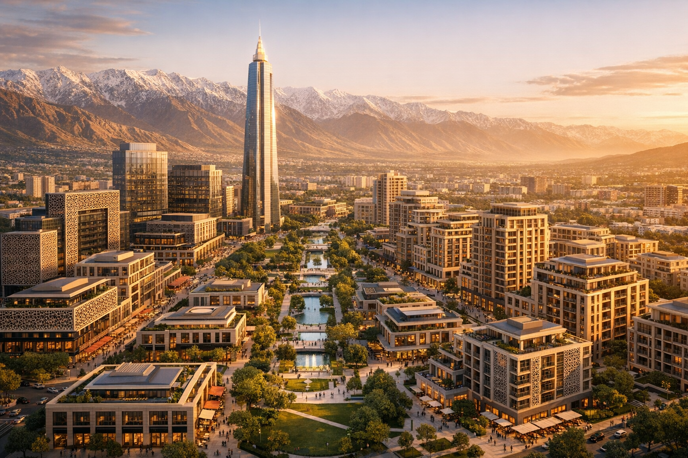
A human-scale, livable district organized around a central green spine. This scheme prioritizes residential delivery, neighborhood completeness, and phased economic viability.
Average FAR of 3.5–4.0 across the site. Maximum building height of 80 meters (office cluster). Predominantly a mid-rise, walkable neighborhood with generous public realm. Parking primarily below-grade.
A signature urban destination that creates a new skyline for Dushanbe. This scheme concentrates density and ambition to produce iconic architecture and a nationally significant destination.
Average FAR of 5.0–6.0 across the site, with peak FAR of 12+ at the tower cluster. Maximum height 200m+ (landmark tower). A dramatic, high-density skyline district. International architectural competition for key buildings.
The architectural identity of Boghi Dushanbe must honor Tajikistan's extraordinary artistic heritage while asserting a thoroughly contemporary vision. The design language bridges tradition and modernity without pastiche or kitsch.
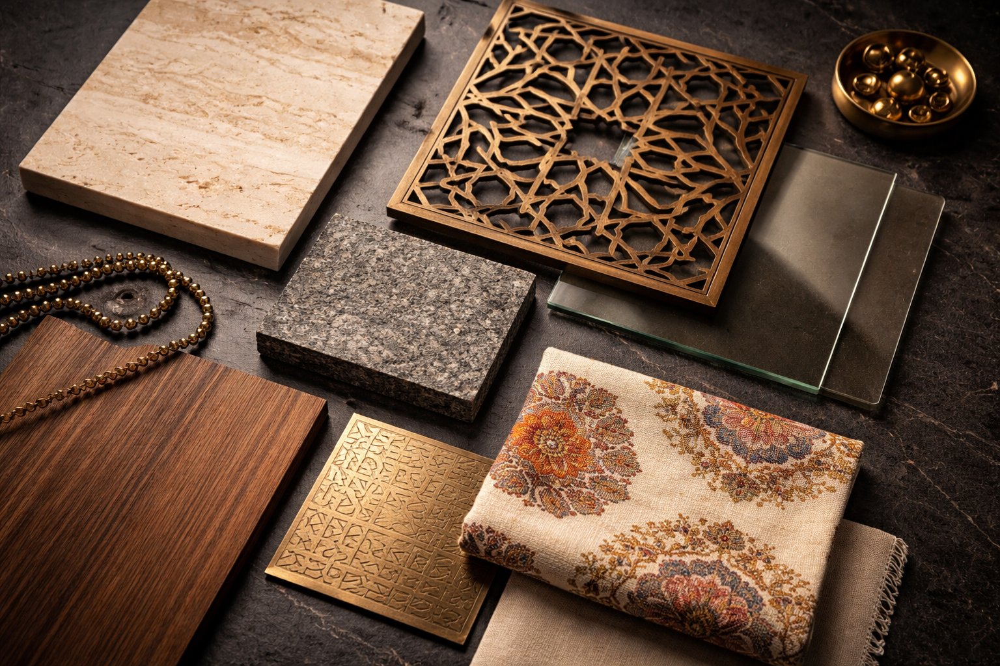
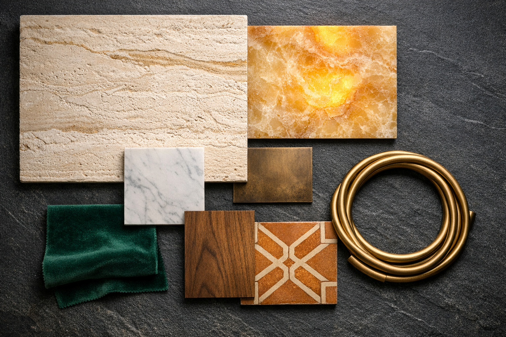
Clean, geometric forms with depth and texture. Contemporary reinterpretations of mashrabiya screens — the perforated geometric screens of Islamic architecture — rendered in anodized aluminum, weathering steel, or precast concrete. These screens provide solar shading (critical in Dushanbe's continental climate with hot summers), visual privacy in residential buildings, and a rhythmic, human-scale pattern language that connects to centuries of Central Asian decorative art.
The geometric patterns draw specifically from Ismaili and broader Islamic geometric traditions prevalent in Tajikistan — interlocking stars, hexagonal tessellations, and arabesques — abstracted to contemporary precision rather than literal reproduction.
Travertine: Locally sourced from Tajikistan's extensive limestone deposits. Used for podium cladding, public realm paving, and feature walls. Warm cream and honey tones that glow in Dushanbe's clear mountain light.
Local granite: Dark grey-black granite for base courses, plaza paving, and water feature edges. Provides gravitas and permanence.
Anodized aluminum: Bronze and champagne-toned anodized aluminum for mashrabiya screens, balcony railings, and tower crowns. Low maintenance, corrosion-resistant, and capable of precision geometric fabrication.
Glass curtain walls: High-performance glazing for office and tower buildings. Low-emissivity coatings for energy efficiency, with selective use of fritted or etched glass incorporating geometric patterns.
Heights graduated from the edges to the center or key node, creating a legible silhouette from multiple city viewpoints. The landmark tower anchors the composition, with surrounding buildings stepping down in deliberate increments. No building blocks the mountain view corridors identified in the master plan.
The skyline reads as a mountain range in miniature — peaks, ridges, and valleys — an architectural metaphor for the Fann Mountains that frame Dushanbe's horizon. This is achieved through varied tower heights (80m, 120m, 150m, 200m+) and articulated rooflines rather than flat-topped uniformity.
Mature tree planting: London plane trees, walnuts, mulberries, and elms (all native or naturalized in Tajikistan) planted at semi-mature size to create immediate canopy. The "bogh" (garden) identity demands lush, generous planting from day one.
Water features: Reflecting pools, channels (jui), and fountains referencing the Persian-Tajik garden tradition of flowing water as both cooling element and spiritual metaphor. Recycled water systems for sustainability.
Mountain-view corridors: East-west visual axes maintained through building placement, ensuring residents and visitors always feel connected to the Fann Mountains and the dramatic topography that defines Dushanbe's identity.
Warm gold uplighting on key facade elements and public buildings, creating a cohesive nocturnal identity visible from across the city. The landmark tower's crown illuminated with a constellation-inspired LED pattern — referencing Tajikistan's crown and stars on the national flag.
Retail promenades lit with festoon-style warm white lighting. Landscape features with embedded ground lighting in pools and channels. The overall effect: warm, inviting, and distinctly "golden" — a district that glows rather than glares.
Suzani motifs: The vibrant embroidered textiles of Tajikistan — suzani — abstracted into large-scale facade panels, public art installations, and paving patterns. Not literal reproduction, but the flowing botanical forms and radial symmetries of suzani translated into contemporary materials.
Chaikhona tradition: The Tajik teahouse — a place of community gathering, elevated on a platform with carpets and low tables — inspires the design of public pavilions, rooftop terraces, and community spaces throughout the district. These are social infrastructure, not decoration.
Islamic geometry: Girih tiles, muqarnas-inspired canopies, and geometric tessellations as functional architectural elements (shading, ventilation, wayfinding) rather than applied ornament.
From luxury lobbies to penthouse living, every interior space reflects the fusion of Central Asian craft and contemporary sophistication.
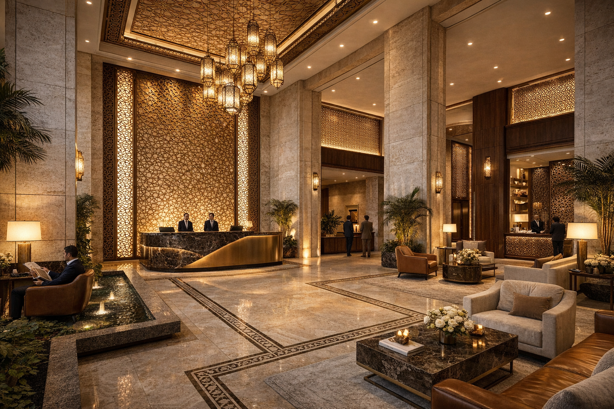
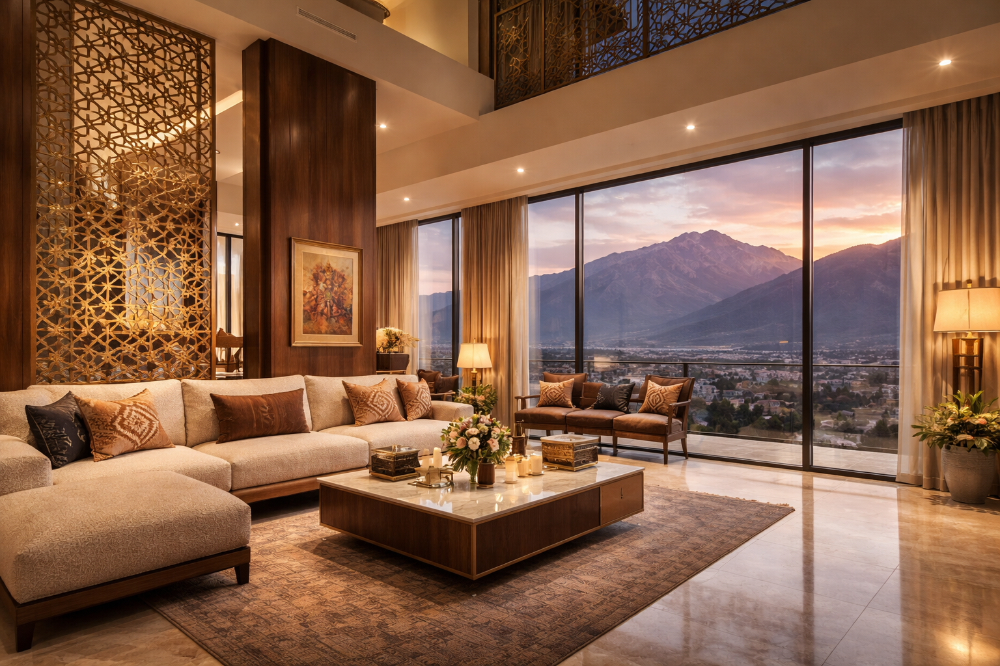
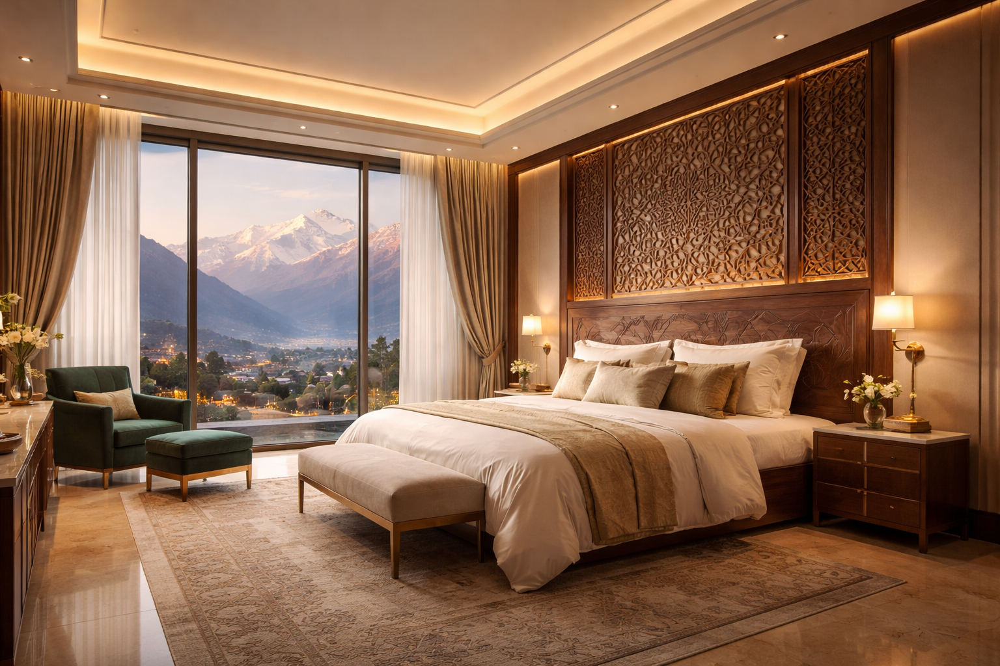
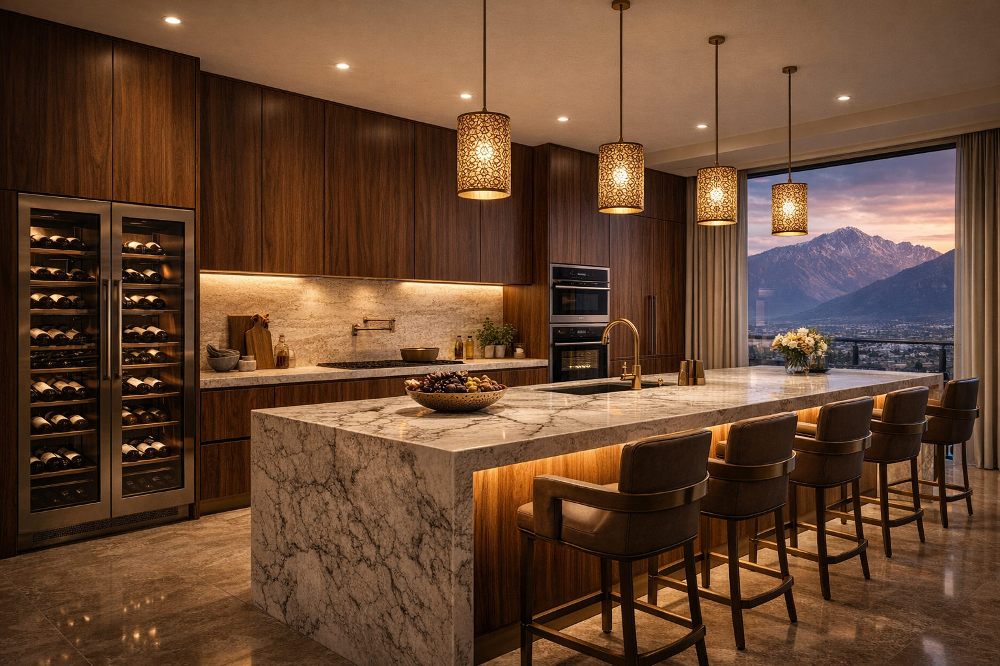
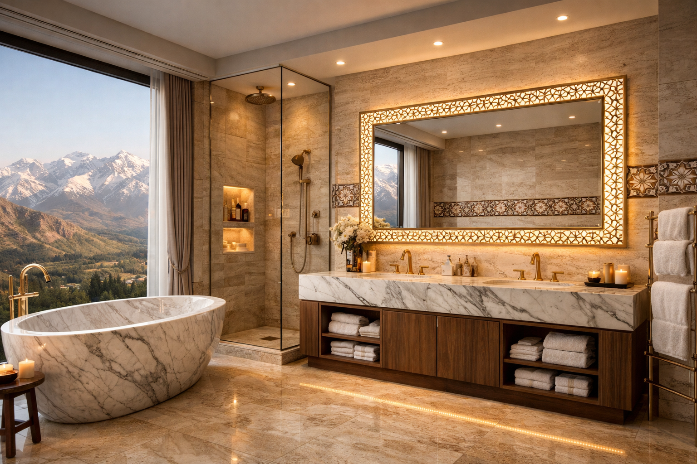
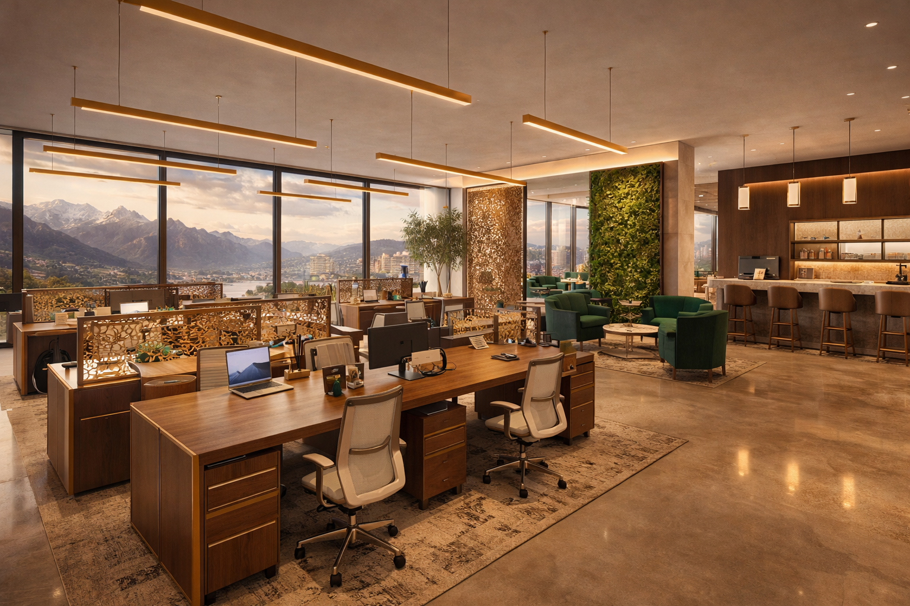
The following prompts are designed for use with AI image generation tools (Midjourney, DALL-E 3, Stable Diffusion) or as briefs for traditional architectural visualization studios. Each prompt describes a specific view of Boghi Dushanbe.
A curated selection of architectural renderings capturing the character, scale, and ambition of Boghi Dushanbe across different settings and times of day.
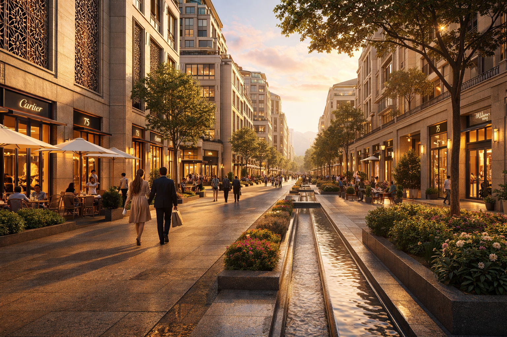
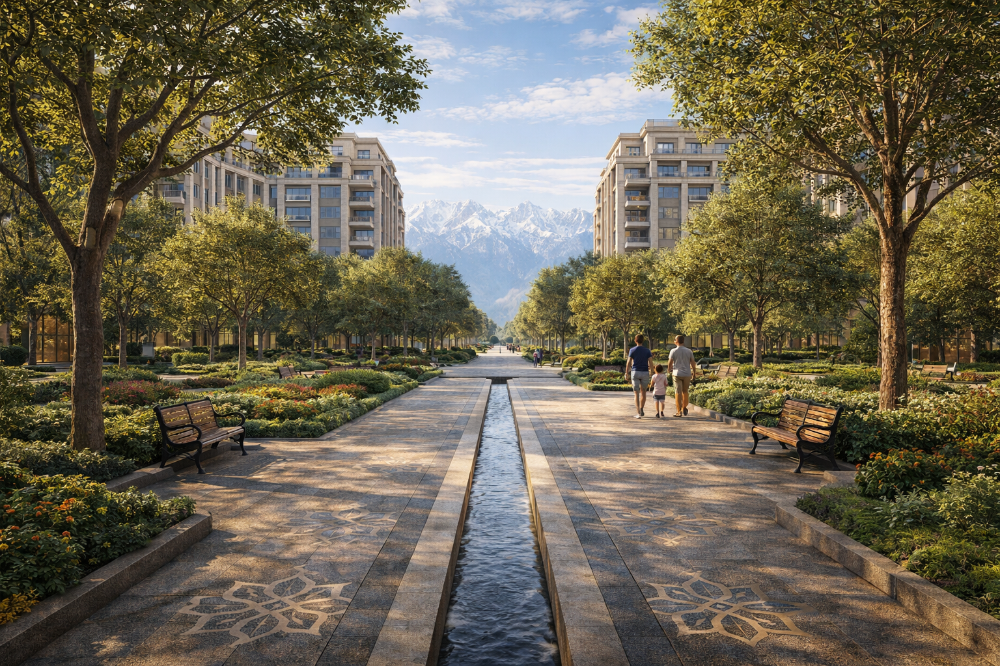
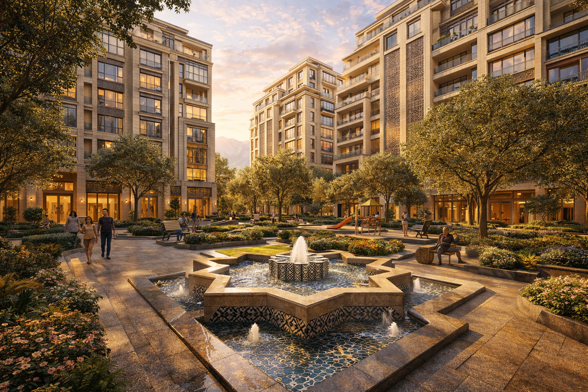
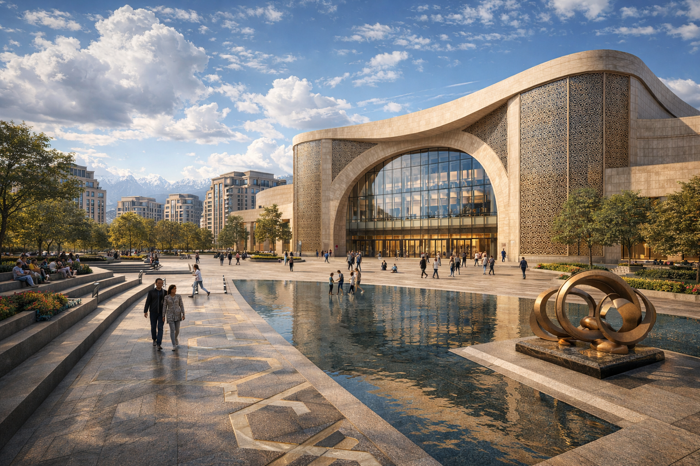
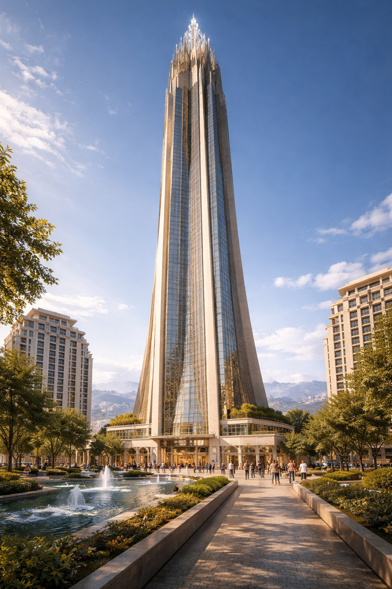
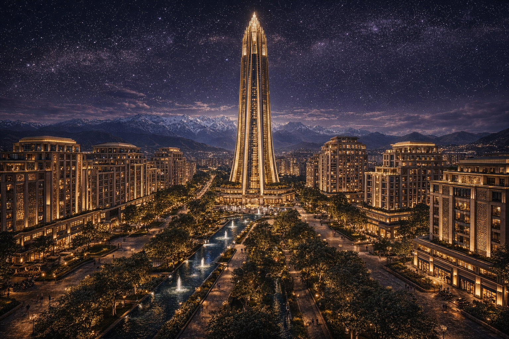
| Use | % of Site | Approx. Land Area | GFA Range | Notes |
|---|---|---|---|---|
| Residential | 35–40% | 103,000–120,000 sqm | 1,200,000–1,500,000 sqm | Mix of affordable, mid-market, and premium. Towers (15–40 floors) and mid-rise (6–12 floors). |
| Commercial / Office | 10–12% | 30,000–36,000 sqm | 200,000–300,000 sqm | Class A offices, tech hub, co-working. High-rise cluster at primary frontage. |
| Retail & F&B | 8–10% | 24,000–30,000 sqm | 150,000–200,000 sqm | High street retail, destination mall, neighborhood convenience. |
| Hospitality | 3–4% | 9,000–12,000 sqm | 50,000–80,000 sqm | 5-star hotel (300–400 keys), business hotel (200–250 keys). Branded residences. |
| Community & Civic | 5–6% | 15,000–18,000 sqm | 40,000–60,000 sqm | Mosque, schools (2–3), medical clinic, cultural center, library. |
| Public Realm & Parks | 18–22% | 53,000–65,000 sqm | — | Central park, green spine, plazas, waterfront, amphitheater. |
| Roads & Infrastructure | 15–18% | 44,000–53,000 sqm | — | Internal road network, utilities, below-grade parking access. |
| Total | 100% | ~295,000 sqm | ~1,800,000–2,500,000 sqm |
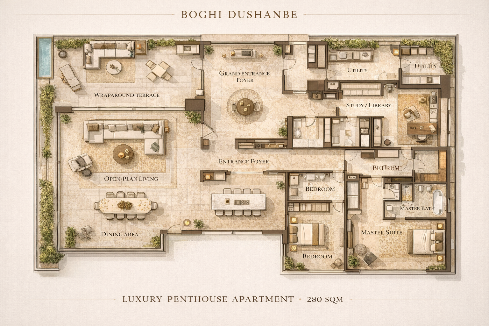
| Metric | Low Estimate | High Estimate | Assumptions |
|---|---|---|---|
| Residential Units | 12,000 | 15,000 | Average unit size 85–110 sqm GFA; mix of 1BR, 2BR, 3BR, and 4BR |
| Population Capacity | 30,000 | 45,000 | 2.5–3.5 persons per unit; varies by unit mix |
| Hotel Keys | 400 | 600 | One 5-star (300–400 keys), one business hotel (100–200 keys) |
| Office Workstations | 15,000 | 25,000 | 12–15 sqm per workstation; mix of traditional and co-working |
| Retail Units | 800 | 1,200 | Average 120–180 sqm per unit; includes F&B |
| Parking Spaces | 15,000 | 20,000 | Primarily below-grade; 1.0–1.3 spaces per residential unit + commercial allocation |
| School Capacity | 2,500 | 4,000 | 2–3 schools (primary and secondary); sized for district population |
| Park / Open Space | 5.3 ha | 6.5 ha | 18–22% of total site area; exceeds most international benchmarks |
| Cultural Center | 12,000 sqm | 18,000 sqm | Main hall (1,500 seats), exhibition gallery, multipurpose spaces |
Construction phase: 20,000+ direct jobs over 10–15 years, including skilled trades, engineering, and project management. Permanent employment: 15,000–20,000 jobs in offices, retail, hospitality, education, healthcare, and facility management. Indirect employment multiplier of 2.5–3x creates an additional 40,000–60,000 jobs in the broader economy through supply chain effects.
The completed district would generate significant municipal and national tax revenue through property taxes, business taxes, VAT on retail and hospitality, income taxes from employees, and land value capture mechanisms. At maturity, the district could contribute meaningfully to Dushanbe's annual municipal budget, reducing the city's dependence on central government transfers.
At current Dushanbe market rates and projected appreciation (4.69% annual growth), the completed Boghi Dushanbe district could represent $3–5 billion in real estate value at maturity. This would make it the single most valuable real estate asset in Tajikistan and a cornerstone of national wealth. Rental yields of approximately 10% in the current market suggest strong investor returns.
The 5-star hotel, cultural center, destination retail, and architectural landmarks would position Boghi Dushanbe as a regional tourist destination. Dushanbe is increasingly recognized as a gateway to the Pamir Highway and Tajikistan's spectacular mountain landscapes. A world-class urban district enhances the city's appeal for business tourism, cultural tourism, and stopover visitors.
A well-structured PPP (public-private partnership) for Boghi Dushanbe could attract investment from international development finance institutions (EBRD, IFC, ADB), sovereign wealth funds (particularly Gulf-based funds with interest in Central Asia), and international real estate developers. The project's scale and government backing provide the credibility that institutional investors require.
Boghi Dushanbe would become Tajikistan's most visible urban development project, comparable in ambition to Astana's new city center (Kazakhstan) or Ashgabat's marble-clad modernization (Turkmenistan), but with a more humane, livable, and economically sustainable approach. International media coverage of a well-designed Central Asian district project would enhance Tajikistan's global reputation.
Large-scale urban redevelopment generates value far beyond the site boundary. International experience (London Docklands, Barcelona 22@, Songdo IBD) demonstrates that well-planned flagship districts increase property values in surrounding neighborhoods by 15–30% within the first decade.
For Dushanbe, Boghi Dushanbe would:
The optimal delivery mechanism is a public-private partnership where:
This structure aligns with EBRD's stated preference for PPP models in its 2025–2030 Tajikistan strategy and with the World Bank's Dushanbe Sustainable Urban Development Project framework.
Boghi Dushanbe is not built in a day. The phasing strategy prioritizes early visible wins, builds market confidence progressively, and reserves the most ambitious elements for when the district's success is proven.
The success of Boghi Dushanbe depends on strong, sustained government commitment. The project must be framed not as a commercial real estate venture but as a national initiative that serves the people of Tajikistan.
Dushanbe is the face of Tajikistan to the world. As the nation's diplomatic, commercial, and cultural center, the capital's physical environment directly reflects national ambition and capability. Boghi Dushanbe transforms an industrial-era liability into a 21st-century asset, demonstrating that Tajikistan is building for the future while honoring its past.
The project directly addresses the housing crisis that affects hundreds of thousands of Dushanbe residents. By delivering 12,000–15,000 modern homes alongside schools, clinics, parks, and retail, Boghi Dushanbe creates a complete neighborhood where families can thrive. This is government serving its citizens in the most tangible way possible.
With 20,000+ construction jobs and 15,000+ permanent positions, Boghi Dushanbe represents one of the largest job creation initiatives in Tajikistan's modern history. The project provides employment across skill levels, from laborers to engineers, from shop assistants to hotel managers, creating a broad-based economic benefit.
Replacing industrial infrastructure with green urbanism — parks, tree-lined streets, clean buildings, and modern waste management — is an environmental win for Dushanbe. The project eliminates a source of industrial pollution and creates the city's largest new green space, contributing to air quality, biodiversity, and climate resilience.
The following studies and approvals are essential before any construction begins. This disciplined approach protects the government's interests and ensures the project's long-term viability.
| Study / Approval | Purpose | Indicative Timeline | Lead Agency |
|---|---|---|---|
| Market Feasibility Study | Validate demand, pricing, absorption rates for all uses | 3–4 months | International consultancy (JLL, CBRE, Colliers) |
| Environmental Impact Assessment | Assess contamination, remediation requirements, ecological impact | 4–6 months | Committee for Environmental Protection |
| Infrastructure Capacity Study | Evaluate roads, water, power, sewage capacity and upgrade needs | 3–4 months | Dushanbe City Engineering Department |
| Legal & Land Tenure Review | Clarify ownership, concession terms, regulatory framework | 2–3 months | State Committee on Land Management |
| Traffic & Transportation Study | Model traffic impacts, public transport integration, parking demand | 3–4 months | Dushanbe Transport Authority |
| Financial Structuring | Develop PPP model, financing plan, investor outreach strategy | 4–6 months | Ministry of Finance / IFC Advisory |
| Master Plan Development | Detailed urban design, architectural guidelines, phasing plan | 6–9 months | International master planning firm |
| Cabinet Approval | Formal government endorsement of project and PPP framework | Following completion of above studies | Government of the Republic of Tajikistan |
A responsible proposal must acknowledge risks transparently. The following analysis identifies key risks and proposes practical mitigation measures.
| Risk | Impact | Likelihood | Description | Mitigation Strategy |
|---|---|---|---|---|
| Land Ownership & Concession | High | Medium | The site's ownership structure, existing concessions, and legal framework for transfer or long-term lease may be complex, involving multiple state entities. | Commission legal and land tenure review as first priority. Engage the State Committee on Land Management early. Establish clear governmental authority over the project. Consider special economic zone or development zone designation. |
| Industrial Operations Relocation | High | High | Active thermal power and industrial operations cannot be abruptly terminated. Relocation or replacement of energy infrastructure requires careful planning to avoid disruption to city services. | Phase development to allow continued operations during transition. Coordinate with Barqi Tojik (national energy company) on replacement facilities. Incorporate transition costs into project budget. Allow 2–3 year decommissioning timeline. |
| Environmental Remediation | High | High | Decades of industrial activity may have contaminated soil and groundwater. Remediation costs can be significant and timelines unpredictable. | Conduct Phase I and Phase II environmental assessments before any commitment. Budget conservatively for remediation (5–10% of total project cost). Engage international environmental engineering firm. Explore EBRD/World Bank environmental remediation funding. |
| Financing Complexity | High | Medium | A $3–5B project requires multi-source financing over 15 years. Tajikistan's sovereign credit rating and currency risk may deter some investors. | Phase investment to match market absorption. Structure PPP to share risk appropriately. Engage DFIs (EBRD, IFC, ADB) for anchor financing and credibility. Consider Somoni-denominated revenue streams for residential components. Diversify investor base (Gulf SWFs, Chinese investors, Turkish developers). |
| Public Concerns | Medium | Medium | Residents may have concerns about displacement, construction disruption, affordability of new housing, or loss of familiar landmarks. | Early and transparent public consultation. Commit to affordable housing component (minimum 30% of residential units at below-market rates). Deliver public park and community facilities first. Establish community liaison office. Provide employment priority to local residents. |
| Traffic & Infrastructure Strain | Medium | Medium | Adding 30,000–45,000 residents and 15,000–20,000 workers will significantly increase traffic on surrounding roads and demand on utilities. | Commission traffic impact study early. Design internal road network to distribute traffic to multiple access points. Invest in road upgrades as part of Phase 1 infrastructure. Design for future public transport integration (BRT or light rail). Mandate below-grade parking to keep streets pedestrian-friendly. |
| Political & Regulatory Coordination | Medium | Low | The project spans multiple government jurisdictions and requires sustained political commitment across electoral cycles. | Establish project at the highest level of government authority. Create dedicated project delivery authority with clear mandate. Develop cross-party support by emphasizing public benefits. Embed the project in the city's 2040 master plan. Secure early, formal approvals that create institutional momentum. |
| Construction Capacity | Medium | Medium | Tajikistan's construction industry may lack the capacity and technical skills for a project of this scale and quality. | Engage international contractors for key buildings (tower, hotel, cultural center). Invest in workforce training programs. Phase construction to allow capacity building. Partner with Turkish, Chinese, or Gulf construction firms with Central Asian experience. |
Every great city has a moment when it decides to become something more. For Paris, it was Haussmann's boulevards. For Singapore, it was the transformation of a swamp into Marina Bay. For Astana, it was the audacious decision to build a new capital on the steppe. These were not inevitable outcomes — they were acts of vision, courage, and sustained commitment.
Dushanbe stands at such a moment. The 30 hectares at the heart of this proposal are not merely land — they are a canvas for national ambition. The industrial infrastructure that occupies the site served Tajikistan in an earlier era. What replaces it can serve Tajikistan for the next century: homes for families, schools for children, parks for communities, workplaces for a new generation, and landmarks that tell the world Tajikistan is building a future worthy of its extraordinary people and landscape.
Boghi Dushanbe is not a fantasy. It is a disciplined, phased, financially structured proposal that learns from international best practice while remaining rooted in Tajik culture, climate, and values. It addresses the housing crisis. It creates tens of thousands of jobs. It attracts international investment. It transforms the city's skyline and its citizens' quality of life.
But it begins with a decision. A decision to commission the feasibility studies that turn vision into evidence. A decision to engage the international expertise that turns ambition into architecture. A decision to trust that Tajikistan deserves world-class urbanism — and can deliver it.
We respectfully recommend that the Government of the Republic of Tajikistan and the Mayor of Dushanbe authorize a comprehensive feasibility study for the Boghi Dushanbe project, encompassing market analysis, environmental assessment, infrastructure evaluation, financial structuring, and preliminary master planning. This study, estimated at 6–9 months duration, will provide the evidence base for an informed investment decision.
The garden is ready to be planted. The question is not whether Dushanbe deserves this — it is whether this generation will have the vision to build it.
The following publicly available sources informed the analysis, data, and assumptions in this proposal. All sources should be verified during the formal feasibility study phase.
| Source | Reference | Data Used |
|---|---|---|
| World Bank | Dushanbe Sustainable Urban Development Project (P178187). Project documents available at worldbank.org/projects. | Urban development strategy for Dushanbe; institutional framework for city modernization; infrastructure investment priorities. |
| EBRD | Tajikistan Country Strategy 2025–2030. Published at ebrd.com/tajikistan. | Green cities initiative; private sector development priorities; PPP framework guidance; Tajikistan economic outlook. |
| Asian Development Bank (ADB) | Tajikistan Country Operations, Dushanbe-related projects. Available at adb.org/countries/tajikistan. | Infrastructure capacity data; urban transport assessments; housing sector analysis. |
| Global Economy & Markets (GEM) | Tajikistan Real Estate Market Report and Economic Indicators. | Real estate growth rate (4.69% annual); rental yield data (~10%); macroeconomic indicators. |
| Asia-Plus Media Group | Reporting on Dushanbe urban development, RMJM Tower, housing market. asiaplustj.info. | RMJM Dushanbe Tower announcement; housing demand and supply data; city expansion plans to 25,000 hectares by 2040. |
| Statistical Agency of Tajikistan | Population and demographic data. stat.tj. | Dushanbe population (~1.07M); population growth rate (2.73%/yr); urbanization trends. |
| RMJM Architects | Dushanbe Tower project announcement. rmjm.com. | Supertall tower planned for Dushanbe; city's openness to landmark architecture; modernization ambitions. |
| Aga Khan Development Network | Architecture and urban development programs in Tajikistan. akdn.org. | Central Asian architectural heritage; Ismaili geometric traditions; sustainable development in Tajikistan. |
| OpenStreetMap / Satellite Imagery | Site identification and measurement at coordinates 38.6088, 68.7732. | Site area estimation (~295,000 sqm); perimeter measurement (~2,792m); adjacency analysis; current land use identification. |
| International Precedents | King's Cross (London), 22@ (Barcelona), Marina Bay (Singapore), Astana New City (Kazakhstan), Songdo IBD (South Korea). | Comparable project benchmarks; phasing strategies; PPP structures; catalytic economic effects. |